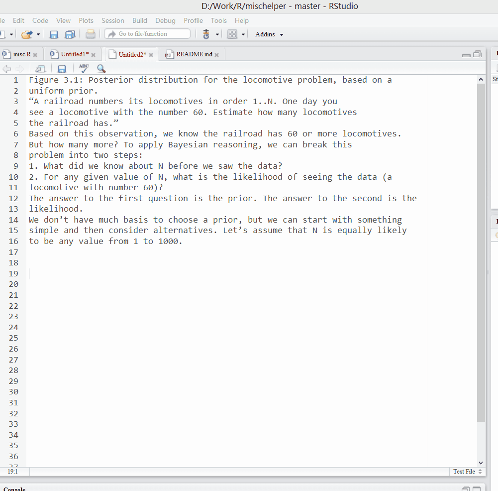
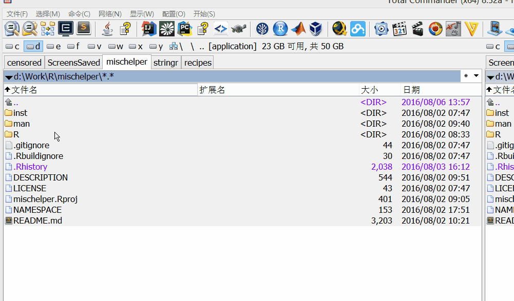
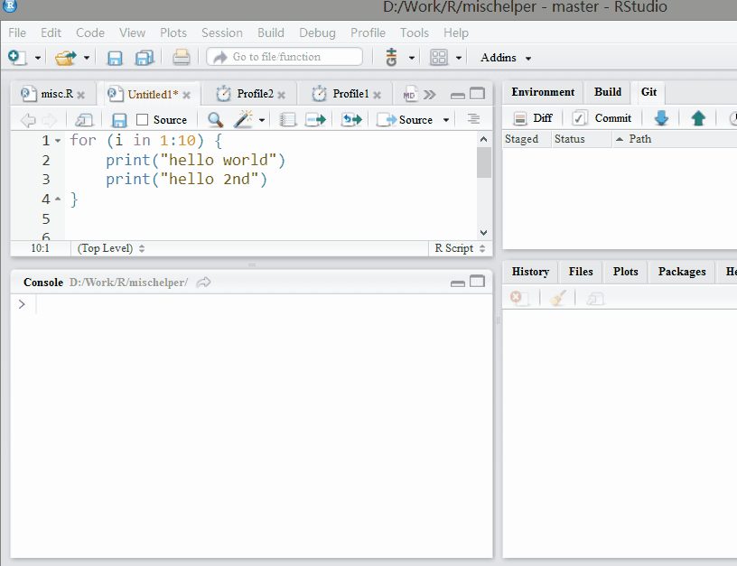
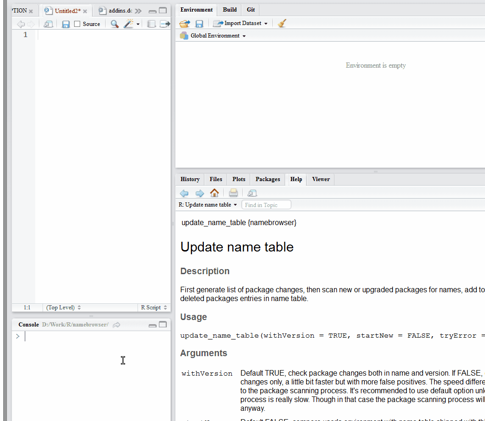
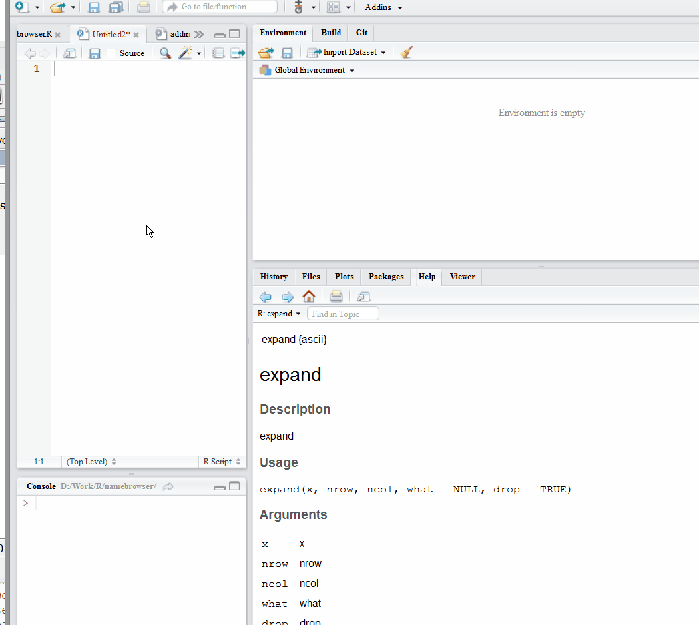
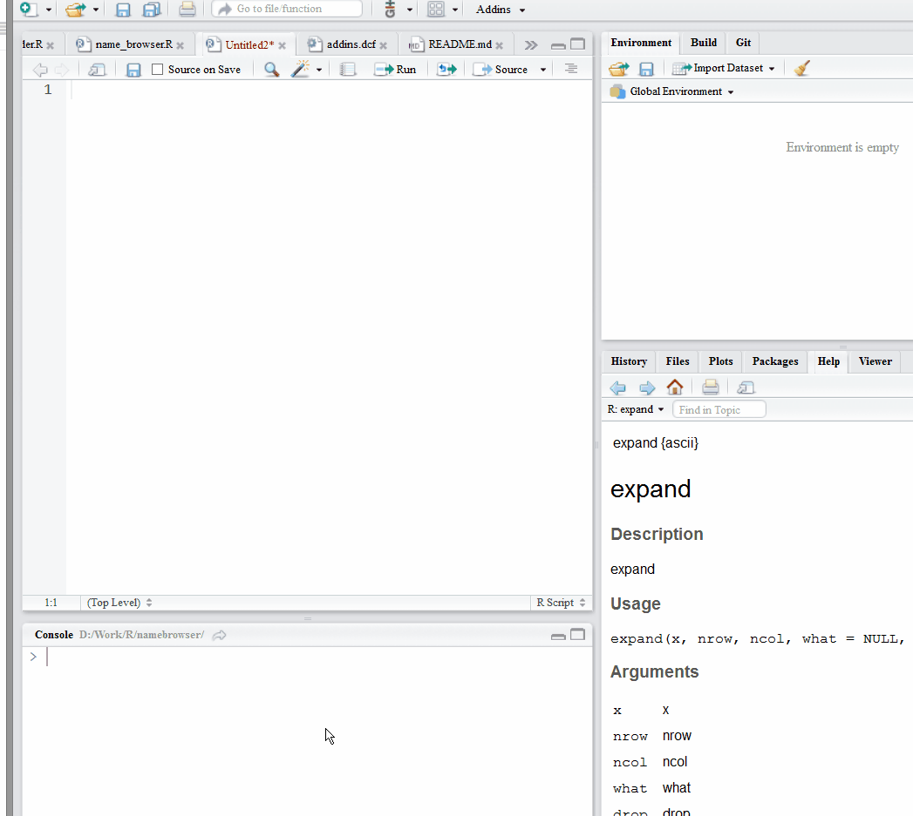

RStudio addins - first attempt
Recently I found RStudio began to provide addin mechanism. The examples looked simple, and the addin API easy to use. I immediately started to try writing one by myself. It will be a good practice project for writing R package, and I can implement some features I wanted but not in RStudio’s high priority list.
My first idea came from a long time frustration of using Ctrl+Enter to run current statement in console. With ggplot code like this, Ctrl+Enter only send one line with your cursor.
ggplot(data = diamonds) +
geom_bar(mapping = aes(x = cut, fill = cut), width = 1) +
coord_polar() +
facet_wrap( ~ clarity)
I submitted a feature request for this to RStudio support, though I didn’t expect it to be implemented soon since they must have lots of stuff in list.
After a little bit research on how R can recognize multiple line statement to be single statement, I felt the problem was not easy but doable.
R know a statement is not finished yet even with newline if it found
- a string started with quotation mark
- an operator like
+,/,<-in the end of line - a function call started with
(
I started to write regular expressions and work on the addin mechanism. After some time I began to test on sample code, then I found RStudio can send multiple line statement with Ctrl+Enter correctly!
Turned out I just upgraded RStudio to the latest preview beta version because of requirement of addin development, and the latest preview version implemented my feature suggestion already. I knew it could be easy from RStudio angle because RStudio has analyzed every line of code, and should have many information readily available.
mischelper
With my initial target crossed off, I tried to find some other usages that could use an addin.
First candidate came from my experience of copying some text from PDF as notes: I’d like to
remove the hard line breaksfrom PDF. To do this I need to separate the hard word wrap from the normal paragraphs. With some experimentations on regular expressions this was done in a short time. I also added option to insert empty line between paragraphs.
I felt the
remove hard line breakfeature is too trivial to be an independent addin, so I added yet another trivial feature: flip the windows path separator\into/. Thus I can copy a file or folder full path in Total Commander, paste it into R script with one click.
Still not satisfied, I found a really useful function later: if you want to do a simple benchmark or measuring time spent on code, the primitive method is to use
proc.time(). Or you could use the greatmicrobenchmarkpackage, which would run the code several times to get better statistics.
To usemicrobenchmark, you need to wrap your code or function like this:microbenchmark::microbenchmark({your code or function}, times = 100)It’s not hard if you are just measuring a function, but I found I wanted to measure a code chunk instead of function in most times. Because it’s harder to interactively debug code once it was wrapped into a function, I always fully test code before it became a function. Sometimes I may also want to test different code chunks, thus the usage of
microbenchmarkbecame quite laborious.I always want to automate everything as much as I can, and this case is a perfect usage. Just select the code I want to benchmark, one keyboard short cut or menu click will wrap them and microbenchmark in console. Since the code in source editor is not changed, I can continue coding or select different code chunk freely without any extra editing.

In similar spirit, I wrote another function to use the profiler provided by RStudio.
Now my addin have enough features, and I named it as mischelper since the features are quite random. I’m not sure if end user will need all of them. Installing the addin will add 5 menu items in addin menu, and the menu can become quite busy quickly. There is no menu organization mechanism like menu folder available yet, though you can edit the menu registration file manually to remove the feature you don’t need from the list.
namebrowser
The features I developed above are very simple. Though another idea I had turned out to be much more complicated.
The motivation came from my experience of learning R packages. There are thousands of R packages and you do need to use quite some of them. Sometimes I knew a method or dataset exist but not sure which package it is in, especially when there are several related candidates, like plyr, dplyr, tidyr etc. R help will suggest to use ?? when it cannot find the name, but ?? seemed to be a full text search, which are slow and return too many irrelevant results.
I used to code Java in IntelliJ IDEA. One feature called auto import can:
- Automatically add import statements for all classes that are found in the pasted block of code and are not imported in the current class yet
- Automatically display import pop-up dialog box when typing the name of a symbol that lacks import statement.
I made a feature request to RStudio again. Though after some research I found this task is not a easy one. In java there are probably not much ambiguity about which class to load since the names are often unique, while in R we have many functions shared same names across packages. User have to check options and make decision, so it’s impossible to load package automatically. The only solution is to provide a database browser to check and search names.
It will need quite some tedious work to maintain a database of names in packages, especially since the packages installed can change, upgrade or be removed from time to time. The method I tested need to load and attach each package before scanning, then there will be the error maximal number of DLLs reached pretty soon. I made extra efforts to unload packages properly after scanning, but there would still be some packages cannot be unloaded because of dependency from other loaded packages. Finally I built up a work flow to scan hundreds of packages, then started to work on a browser to search the name table.
With Shiny and DT it is relatively easy to get a working prototype running, though anything special customization that I wanted to do took lots of efforts to search, read and experiment on every little piece of information. After a lot of revisions I finally got a satisfying version here.



addin list
I think RStudio addin is a great method to allow users to add features into RStudio based on their own needs. Although it’s still in its infancy stage, there are many good addins popped up already. You can check out addinlist, which listed most known addins. You can also install it as a RStudio addin to manage addin installation. Some addins look very promising, like the ggplot theme assist, which let you customize ggplot2 themes interactively.